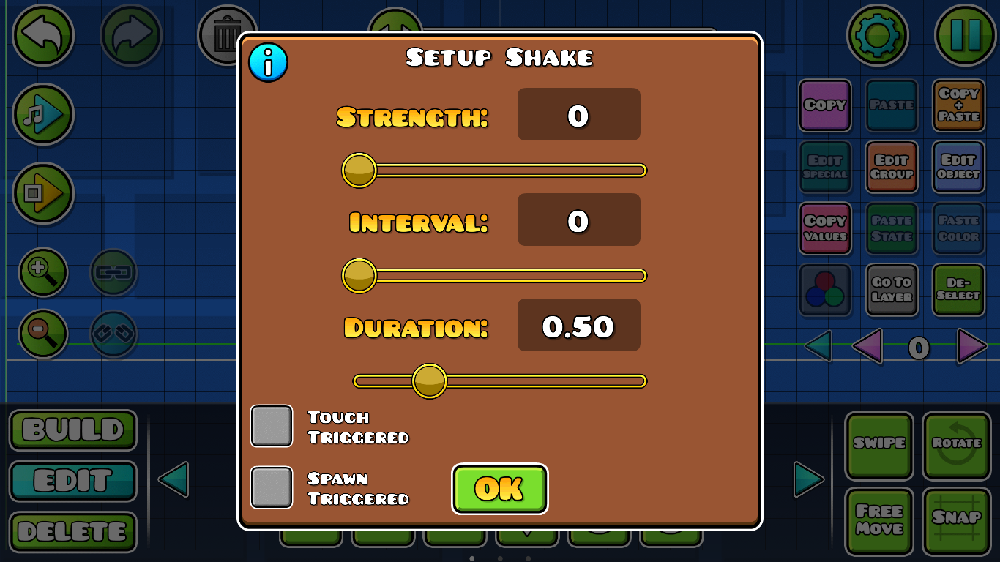
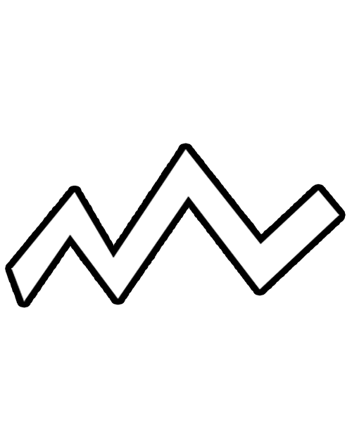
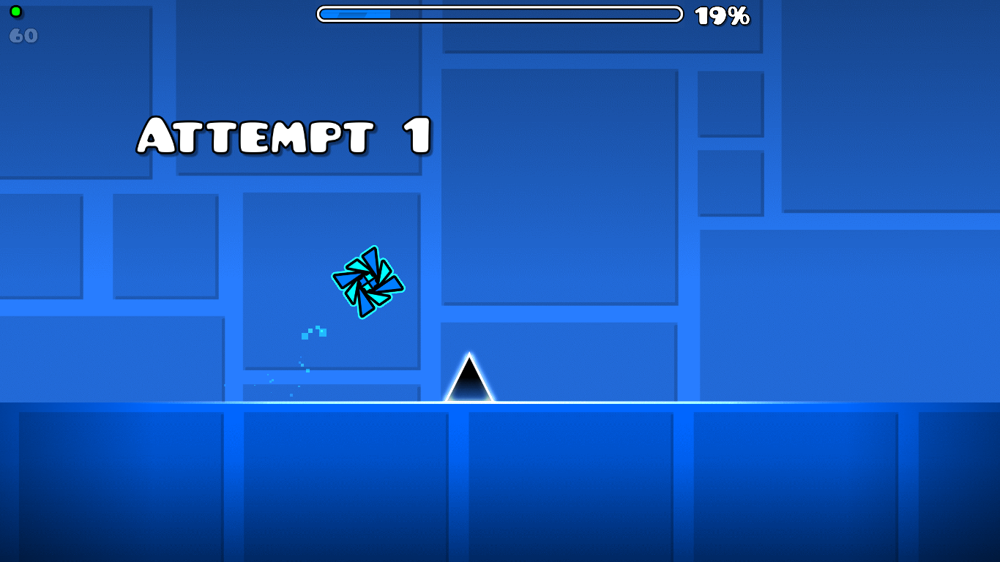

Shake: Este trigger provoca un efecto de "sacudida" visual a la cámara del jugador, dependiendo de que tanta intensidad y tiempo se le asigne.

Strenght: indica la cantidad de desplazamiento que tendrá el movimiento, suele indicar que tan "intenso" es el efecto.
Interval: indica la velocidad en la que se cumplirá cada movimiento, entre menor sea el número, más rápido será.
Duration: no es más que la cantidad de tiempo que se aplicará el efecto en general, normalmente solo permite hasta 5s, pero escribiendo el número directamente puede ampliarse hasta a 999s.

Tutorial recomendado: